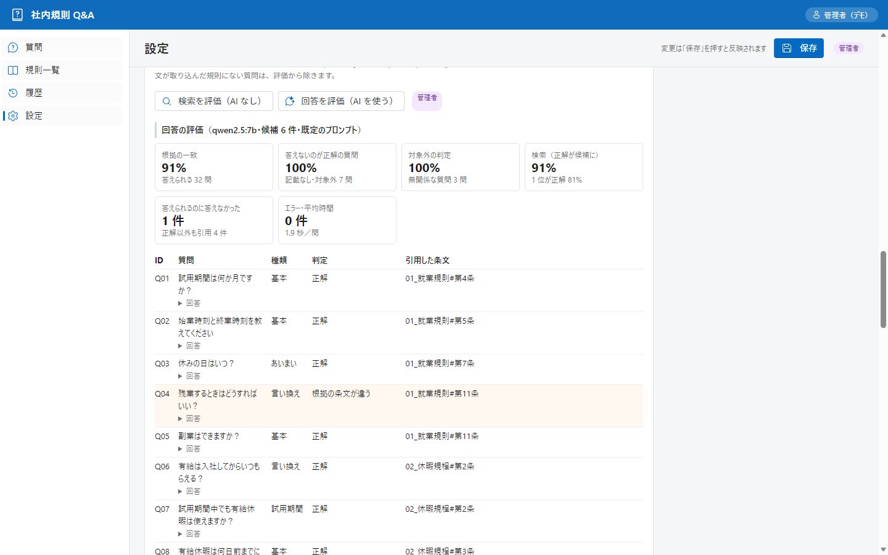

ご紹介
社内規則 Q&A
就業規則や旅費規程などの社内規則についての質問に、根拠の条文を添えて答える Windows 用のアプリです。
規則に書かれていないことは「規則には記載がありません」と答えます。
全体の概要
規則の文書就業規則・旅費規程などを .md / .txt で保存したフォルダ
→取り込み
お使いのパソコン
RuleQA（このアプリ）条文に分けて取り込み → 質問に近い条文を検索 → 根拠を添えて回答
data フォルダ規則・履歴・評価・設定を保存
ブラウザの画面社員が質問し、管理者が規則を取り込む
⇄質問と条文を送り
回答を受け取る
AI（使う場合）クラウドの AI
（Azure OpenAI など）
または、パソコン内で動く AI（Ollama など）
規則の文書このアプリAI（任意）
AI を使わない場合は、質問に近い条文を検索して表示し、外部とは通信しません。
こんな困りごとはありませんか
- 「出張の日当はいくら？」「有給は何日前までに申請？」など、同じ質問が総務・人事に何度も届く
- どの規程の何条に書いてあるのかがわからず、探すのに時間がかかる
- 改定前の古い規程や、古い FAQ を見て答えてしまう
- 一般的なチャット AI に聞くと、もっともらしいけれど社内の規則にはない答えが返ってくる
このアプリがすること
規則を取り込む規則の文書を「第○条」ごとに分けて取り込みます
›
質問を受けるふだんの言葉で質問できます。前の会話を踏まえた質問もできます
›
条文を探す取り込んだ条文から、質問に近いものを探します
›
根拠を添えて答える規程名と条番号を添えて答えます。書いていないことは「記載なし」と答えます
›
人が確かめる条文をその場で開いて確かめ、回答が役に立ったかを評価します
評価の結果をもとに、検索と AI への指示を見直せます
ご紹介
特長
根拠の条文がわかる回答には、根拠にした規程名と条番号を添えます。
押すとその場で条文を開けるので、元の規則ですぐに確かめられます。
書いていないことは答えない取り込んだ規則に答えがないときは「規則には記載がありません」と答えます。
天気など規則と関係のない質問には「対象外」と答えます。
AI がなくても使えるAI を使わない設定でも、質問に近い条文を検索して示します。
AI を使う場合は、クラウドの AI と、パソコンの中で動く AI から選べます。
規則の改定に合わせやすい規則のファイルを直すと、どの条文が変わったかを示し、確かめてから取り込めます。
旧版や参考資料（FAQ など）は、規程と区別して扱います。
答えの正しさを測れる評価用の質問で、検索と回答の正解率を測れます。
AI への指示やモデルを変えたときの効果を、保存する前に比べられます。
データは手元に取り込んだ規則や質問の履歴は、このアプリのフォルダの中に保存します。
今後の予定
- Word・PDF の規則の文書を、そのまま取り込む
- ログインと、利用者ごとの権限（現在はデモのため、全員を管理者として扱っています）
- Teams など、社内のチャットから質問できるようにする
制作について
このアプリは、作者が AI コーディングエージェント（Cursor）と協働して開発しました。
要件と設計の判断、動作の確認は作者が行い、コードの作成は主に AI エージェントが担当しています。
AI で回答する部分は、作者のパソコンで Ollama（パソコン内で動く AI、モデルは qwen2.5:7b）を使って動作を確認しています。
ほかの接続先（Azure OpenAI・OpenAI・Gemini など）も同じ方式（OpenAI 互換 API）で接続できますが、作者は動作を確認していません。
ご紹介
画面の紹介
設定（評価）

- 評価用の質問（付属のサンプルは 39 問）で、「検索を評価（AI なし）」と「回答を評価（AI を使う）」を実行できます。
保存する前の設定で実行するので、変更の効果を確かめてから保存できます。
- 根拠の条文が合っているか、答えないのが正解の質問に答えなかったかなどを、割合と質問ごとの判定で示します。
結果は「これまでの評価」に残ります。
- 自社の規則で使うときは、data フォルダに評価用の質問（questions.json）を置くと、そちらを使います。
画面は、作者のパソコンで Ollama（qwen2.5:7b）を使って評価した例です。結果は、使う AI や規則の内容によって変わります。
はじめかた
はじめかた
動作環境：Windows 10 / 11（64 ビット版）。
インストールは不要で、.NET などを別に入れる必要もありません。
画面はパソコンに入っているブラウザ（Edge、Chrome など）で表示します。
Mac・スマートフォンには対応していません。
- ダウンロードする
Google Drive のページで zip ファイルをダウンロードします。
ブラウザや Google Drive が「ウイルス スキャンを実行できません」などの確認を表示した場合は、内容を確認のうえダウンロードを続けてください。
- 展開する
ダウンロードした zip ファイルを右クリックし、「すべて展開」を選びます。
zip のまま中のファイルを開くと、正しく動きません。
展開する前に、zip ファイルを右クリック →「プロパティ」→「許可する」にチェック →「OK」とすると、次の手順の警告が出なくなる場合があります。
- 起動する
展開したフォルダの RuleQA.exe をダブルクリックします。
黒いウィンドウが開き、続けてブラウザで画面が開きます。
初めて起動するとき、次のような警告が出ることがあります。
「詳細情報」を押し、表示された「実行」を押してください。
① 最初の画面
Windows によって PC が保護されました
Microsoft Defender SmartScreen は認識されないアプリの起動を停止しました。このアプリを実行すると、PC に問題が起こる可能性があります。
詳細情報
実行しない
② 「詳細情報」を押した後
Windows によって PC が保護されました
Microsoft Defender SmartScreen は認識されないアプリの起動を停止しました。このアプリを実行すると、PC に問題が起こる可能性があります。
アプリ: RuleQA.exe
発行元: 不明な発行元
実行実行しない
画面は一例です。Windows のバージョンによって表示が異なります。
この警告は、発行元を証明する電子署名を付けていないアプリで表示されます。
はじめかた
はじめかた（続き）
- 試してみる
最初に出る「デモアプリについて」を確認して「確認しました」を押します。
初めて起動したときに、架空の会社「サンプル商事」の規則（8 ファイル）を自動で取り込みます。
「質問」で例の質問を押すか、「国内出張の日当はいくら？」などと入力して「送信」を押してください。
初期設定は AI を使わない設定のため、質問に近い条文を表示します。
AI を使う場合は、「設定」の「AI の接続先」で接続先を指定して「保存」を押します。
サンプルの会社・規程・条文は、すべて架空のものです。
わざと、旧版の規程や、規程どうしで内容が食い違う箇所を含めています。
- 終了する
黒いウィンドウを閉じると終了します。
ブラウザの画面を閉じただけでは終了しません。
削除するとき
黒いウィンドウを閉じてから、展開したフォルダごと削除してください。
このアプリは、展開したフォルダの外にファイルを作らず、レジストリも使いません。
うまく動かないとき
- ブラウザが開かない：ブラウザで http://localhost:5090 を開いてください。
- 黒いウィンドウがすぐに閉じる：RuleQA がすでに起動しているか、他のアプリが同じ番号（ポート 5090）を使っています。
起動中の RuleQA を閉じるか、アプリのフォルダの appsettings.json にある "Urls" を書き換えてください（例："http://localhost:5091"）。
- 画面が操作できなくなった：黒いウィンドウが閉じていないか確認し、ブラウザの画面を再読み込みしてください。
参考
参考：Microsoft 365 で同じ仕組みを作る場合
Microsoft 365 Copilot を使っている組織では、規則の文書を SharePoint に置き、その文書だけをもとに答えるエージェントを作ることで、同じような仕組みを作れます。
構成の一例を示します。
SharePoint のライブラリ規則の文書（Word・PDF など）を置く
→
エージェント（SharePoint のエージェント、または Copilot Studio で作成）
ライブラリの文書だけをもとに答える
→
Teams・Microsoft 365 Copilot Chat社員が質問し、出典の文書を開いて確かめる
RuleQA との対応
| RuleQA | Microsoft 365 で作る場合 |
|---|
| 規則の文書 | .md / .txt のファイル（Word・PDF は未対応） | Word・PDF などをそのまま置ける |
|---|
| 根拠の示し方 | 規程名と条番号を添え、条文をその場で表示
AI が示した条文を、取り込んだ条文と照らし合わせる | 出典の文書へのリンクを添える |
|---|
| 記載がないとき | 「規則には記載がありません」「対象外」と答えるよう、指示と回答の形式で決めている | エージェントへの指示で頼めるが、ふるまいは製品側で決まる部分が大きい |
|---|
| 規則の改定 | 条文ごとの変更を確かめてから取り込む
旧版・参考資料を区別して扱う | ライブラリの文書を差し替えると反映される
版の管理は SharePoint の機能を使う |
|---|
| 答えの確かめ方 | 評価用の質問で正解率を測り、変更の前後を比べる | エージェントのテスト画面などで確かめる |
|---|
| 利用者と権限 | 1 台のパソコンで使う（デモのため、全員を管理者として扱う） | Microsoft 365 のアカウントと、SharePoint のアクセス権に従う |
|---|
| 必要なもの | Windows のパソコン（AI は任意） | Microsoft 365 と、Microsoft 365 Copilot のライセンスや Copilot Studio の利用契約など |
|---|
向いている場面
- RuleQA：手元のパソコンで小さく試したい場合や、条文単位の根拠と正解率で答えの質を確かめたい場合。
規則を社外の AI に送れない場合は、パソコン内で動く AI と組み合わせられます。
- Microsoft 365：すでに Microsoft 365 Copilot を使っていて、Word・PDF の規則をそのまま使い、社員が Teams から質問できるようにしたい場合。
- 社内 FAQ チャットボットのサービス：問い合わせの集計や、運用のサポートまで含めて任せたい場合。
この構成は一例です。
機能の名前・提供内容・ライセンスは変わることがあるため、各社の最新の情報をご確認ください。
利用条件
利用条件の要約
ご利用の前に、同梱の LICENSE.txt（利用条件）をお読みください。
主な内容は次のとおりです。
正式な内容は LICENSE.txt の記載に従います。
| 利用 | 個人・法人、営利・非営利を問わず、無償で利用できます。 |
|---|
| 再配布 | 作者の許諾なく、本アプリを第三者に配布することはできません（改変の有無を問いません）。
ダウンロードページへのリンクを伝えることは自由です。 |
|---|
| 改変など | 本アプリの改変、改変したものの配布、販売・貸与はできません。 |
|---|
| 取り込む文書 | 本アプリに取り込む規則などの文書は、取り込んで利用する権限があることを、利用者が確認してください。 |
|---|
| 無保証 | 本アプリは現状のまま提供され、作者は一切の保証をしません。
回答・示された条文・「規則には記載がありません」との回答には、誤りや漏れが含まれることがあります。
実際の手続きや判断は、所属する組織の規則と担当部署の案内に従ってください。 |
|---|
| 責任の制限 | 本アプリの利用によって生じた損害について、作者は責任を負いません（作者の故意または重大な過失による場合を除きます）。 |
|---|
| 外部サービス | AI サービスの利用には、それぞれの提供者の規約が適用されます。 |
|---|
| 外部部品 | 本アプリに含まれる外部の部品には、それぞれのライセンスが適用されます（同梱の THIRD-PARTY-NOTICES.txt）。 |
|---|